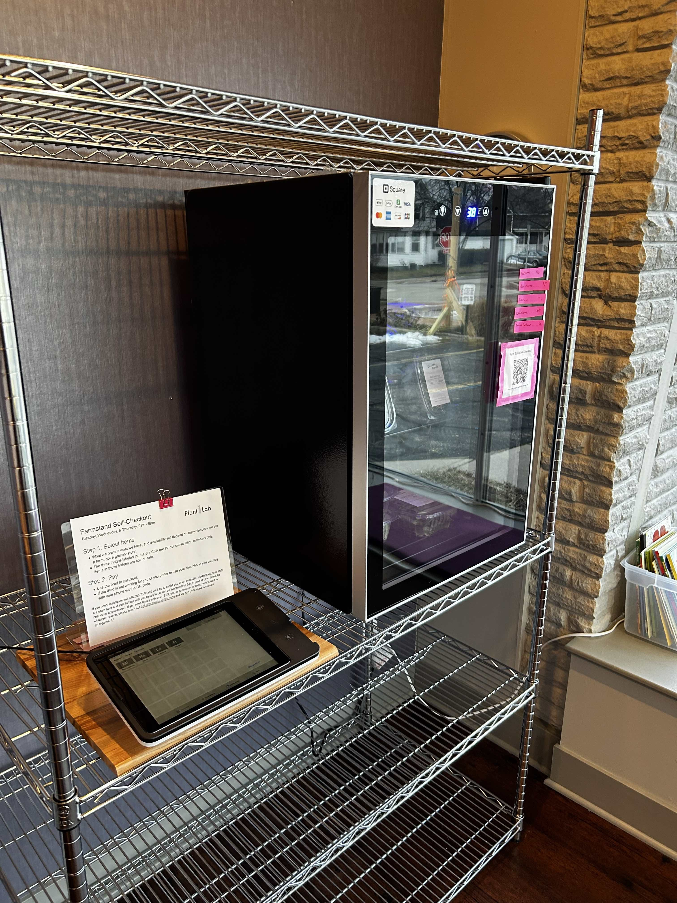

Farmstand
Most of the Plant Lab building is dedicated to growing space, but in the front room you'll find our farmstand. It's just like a roadside farmstand, except it's inside, and it operates year round. There is a fridge and checkout set up for self-serve purchases. It's a great option if you aren't ready for a CSA committment or just want to try something new. We'll have a variable selection of microgreens, lettuce, cooking greens, herbs, and flowers available.
Open Tuesday, Wednesday, Thursday 9am-9pm.
